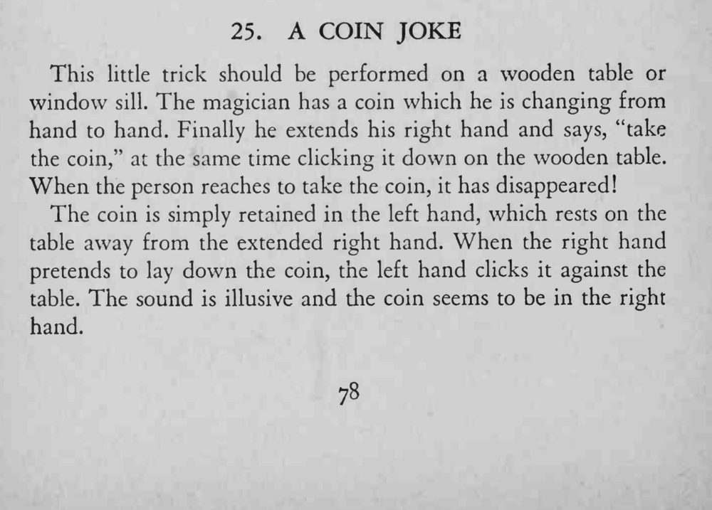

魔术师把硬币在两手间倒来倒去，最后伸出右手说“拿走硬币”，同时把硬币往桌上一敲。对方伸手去拿，硬币却不见了。
敲桌的时机要与右手按币的动作严丝合缝，声音才像是从右手发出来的。

This little trick should be performed on a wooden table or window sill. The magician has a coin which he is changing from hand to hand. Finally he extends his right hand and says, "take the coin," at the same time clicking it down on the wooden table. When the person reaches to take the coin, it has disappeared! The coin is simply retained in the left hand, which rests on the table away from the extended right hand. When the right hand pretends to lay down the coin, the left hand clicks it against the table. The sound is illusive and the coin seems to be in the right hand.